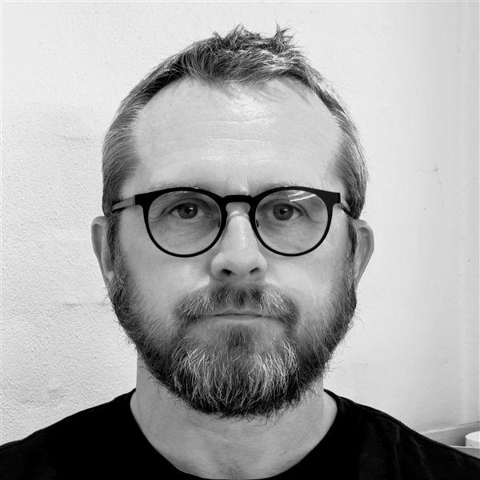

Jeg hjælper kommuner med sagsforberedende arbejde og udkast til miljøgodkendelser, tilladelser og afgørelser – baseret på 17 års erfaring som kommunal miljøsagsbehandler.
Kontakt migSagsforberedende arbejde og udkast til miljøgodkendelser af husdyrbrug.
Sagsforberedelse og udkast til tilladelser til jordvarmeanlæg.
Sagsforberedelse og udkast til udlejningstilladelser til campingpladser.
Udarbejdelse af VVM-screeninger og udkast til screeningsafgørelser.
Sagsforberedelse og udkast til afgørelser i klagesager om røg, støj og møg.
Sagsbehandling af anmeldelser ved etablering, ændring og udvidelse af autoværksteder.
Har din kommune brug for ekstra kapacitet eller specialiseret erfaring i en periode? Jeg går ind i konkrete sager på disse og beslægtede sagsområder og leverer sagsforberedende arbejde og udkast, der er klar til kommunens videre behandling.

Kim Sandahl
Indehaver
Jeg har 17 års erfaring med kommunal sagsbehandling på miljøområdet, særligt miljøgodkendelser af husdyrbrug. Undervejs har jeg også behandlet udlejningstilladelser til campingpladser, tilladelser til jordvarmeanlæg, klagesager om røg, støj og møg, VVM-screeninger og anmeldelser af autoværksteder.
Jeg tilbyder sagsforberedende arbejde og udkast til miljøgodkendelser, tilladelser og afgørelser på disse og beslægtede sagsområder – til kommuner, der har brug for ekstra kapacitet eller specialiseret erfaring i en periode. Som erhvervskontakt har jeg desuden opbygget et indgående kendskab til hele forløbet, fra virksomhedens første henvendelse til den færdige afgørelse, og kan derfor hurtigt sætte mig ind i en sag og levere et solidt beslutningsgrundlag.
Ingen lange introduktionsforløb, der koster kommunen tid og penge. Jeg skal have adgang til sagens akter, kommunens skabeloner og 2-4 eksempelsager – så udarbejder jeg et forslag, der efterfølgende kan tilrettes efter kommunens ønsker.
Sagerne skal være stort set fuldt oplyste ved overdragelsen. Opstår der juridiske tvivlsspørgsmål undervejs, udarbejder jeg et forslag til, hvordan de kan løses.
Udfyld formularen, så vender jeg tilbage hurtigst muligt.
Kim Sandahl
Under Linden 22
7500 Holstebro
Telefon: +45 98 12 12 13
Email: kontakt@sandahl.dk
CVR-nr.: 2284 5694